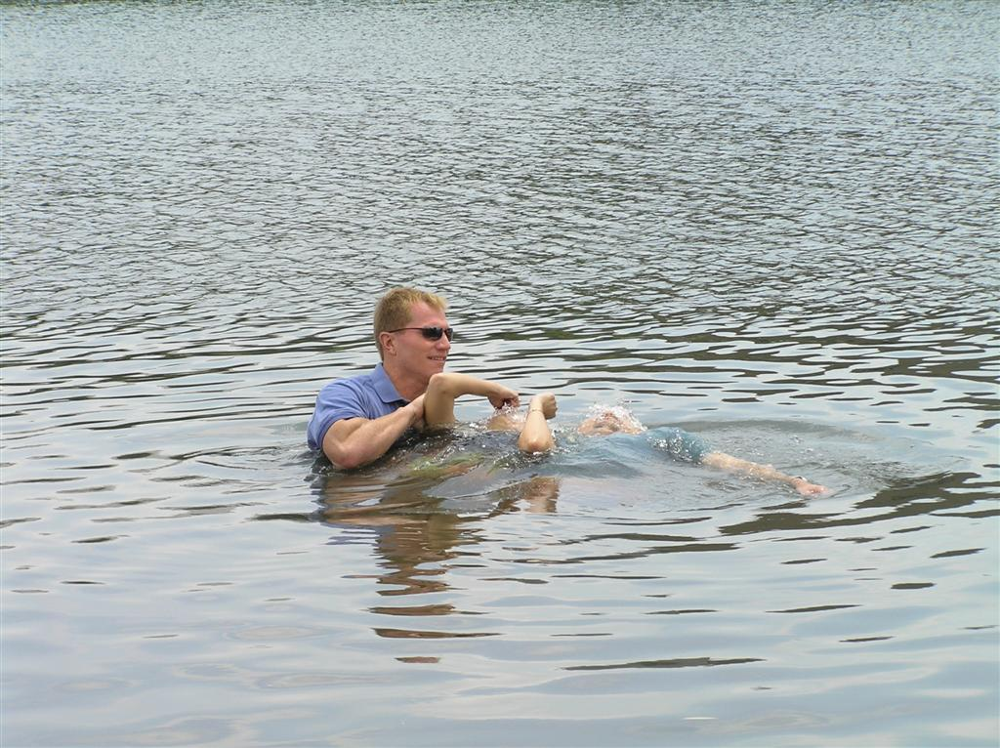
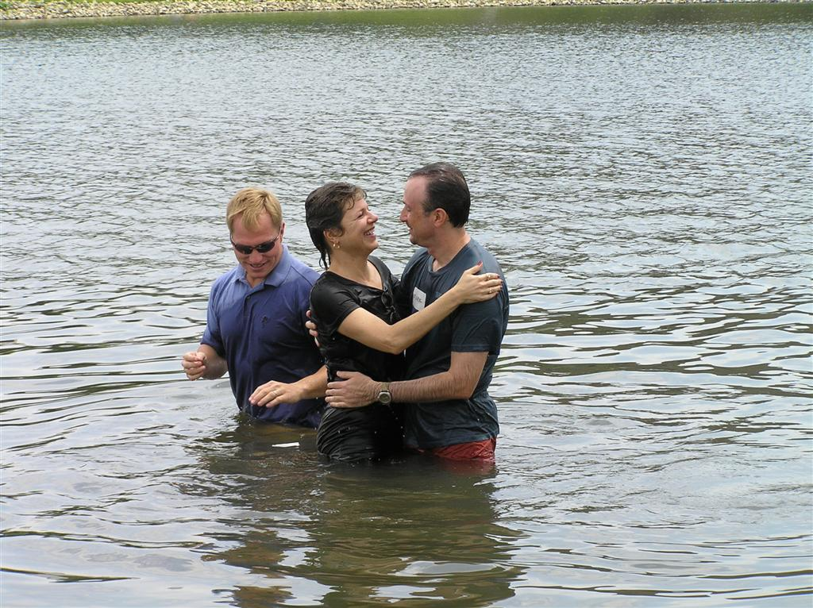

Pray for the Fish!
(For those unfamiliar with this Randy Travis song, see here).

Carol and I were baptized this weekend at our church, Willow Creek Community Church. After 25 years of beautiful weather for their annual summer baptism in the lake, we were afraid that ours was going to be the first to be rained out! But, after a gloomy, rainy and cold morning, the clouds parted (at least partly), the sun shone, and the temperature rose. It turned out to be a beautiful afternoon by the lake, and with friends and family (and several hundred other participants), we finally took the plunge! You can see more pictures here.

(No fish were harmed as a result of this baptism.)
Originally published on the Blogspot site